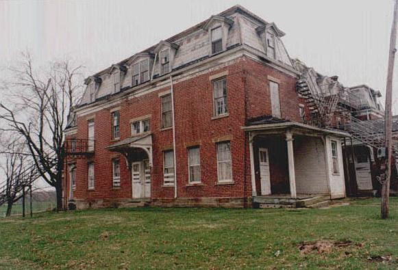

The Morrow County Home

While it stood vacant, the old Morrow County Home had a reputation as haunted. It was such a sinister-looking old orphanage-style mansion that, once it was boarded up and abandoned for a number of years, it could hardly avoid garnering a reputation as a congregating spot for spirits. However, the police barracks located within direct view of the old County Home kept vandalism--and ghost hunting--to a minimum, preserving the old poorhouse in all its deteriorating glory, but also causing the ghost stories to grow with each teller's imagination. A single specific horror story is hard to come by, but plenty have made the rounds in Mt. Gilead.
Information that reached me in Autumn 2012 indicates that the Old Morrow County Home has been saved from the wrecking crew; it was purchased by a private owner, lovingly restored, and is now occupied! The history of the place as a stop on the Underground Railroad draws many visitors--including, I'm told, classes of local schoolchildren. A rare happy ending for a forgotten place.
I never managed to get there when the home was in its sinister-looking vacant phase, but a reader who did contributed many fabulous photos to the website. Have a look at this Contributor's Gallery and see the Home looking neglected and spooky as hell.

The Morrow County Home: Contributor's Gallery
Back